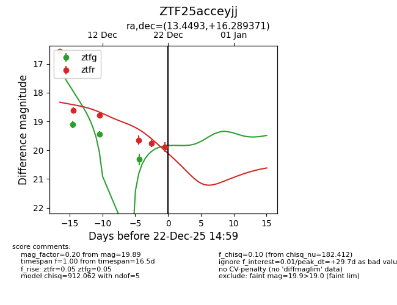
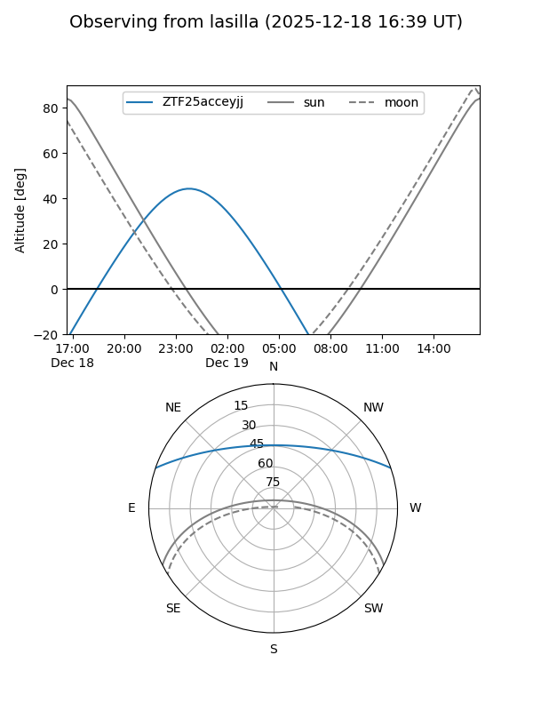
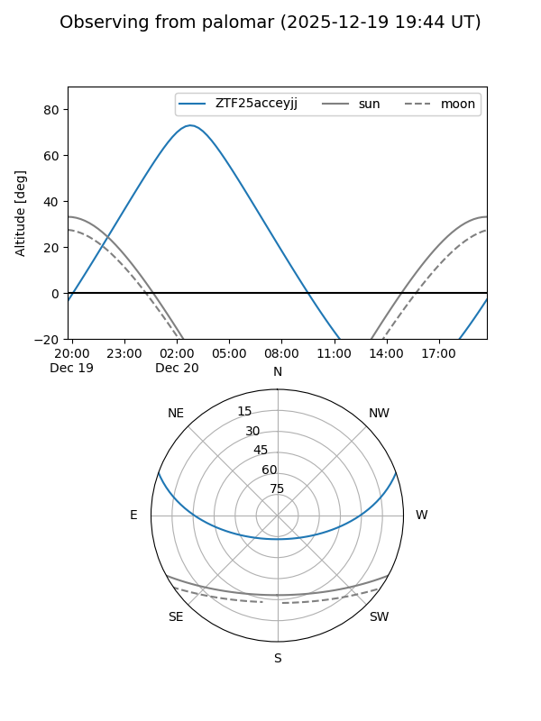
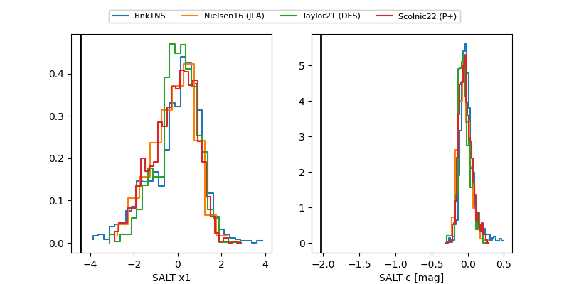

ZTF25acceyjj
Target ZTF25acceyjj at 2025-12-22 15:01
Aliases and brokers:
FINK: fink-portal.org/ZTF25acceyjj
Lasair: lasair-ztf.lsst.ac.uk/objects/ZTF25acceyjj
ALeRCE: alerce.online/object/ZTF25acceyjj
alt names
ZTF25acceyjj (ztf,fink_ztf)
Coordinates:
equatorial (ra, dec) = 13.4493,+16.28937
equatorial (HMS+DMS) = 00:53:47.83,+16:17:21.73
galactic (l, b) = (123.7556,-46.57860)
Flags:
Photometry:
last ztfg=20.32, ztfr=19.89
4 ztfg, 6 ztfr detections
Lightcurve

Visibility


Additional plots
